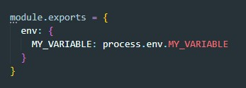

Переменные окружения хранятся в файле .env. Для того что бы иметь доступ к ним необходимо установить библитотеки
npm i --save-dev cross-env dotenvДля того что бы переменные работали первое, что нам надо сделать это создать файл next.config.js в корне проекта и добавить туда вот такой код:
Затем в файле package.json мы в разделе скриптов прописываем наши переменные:
После этого наши переменные будут доступны в любом месте
В корне проекта создаем файл .env
В него помещаем нашу переменную:
Далее в файле next.config.js добавляыем вот такую строчку

Теперь в getServerSideProps мы можем получать доступ до переменной